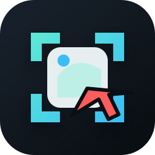

832 x 468 x:292 y:156
重点区域
#FF5C5C1042, 281
标注态重点：选区边框和尺寸标签先建立空间感；工具栏按绘制、样式、操作分组；完成、取消、复制、保存有清晰语义，避免所有按钮长得一样。
滚动页面继续采集
长截图态重点：用 coral 区分普通截图态；缩略图轨道显示拼接进度；工具栏变短，只保留当前任务必要动作。

标注态重点：选区边框和尺寸标签先建立空间感；工具栏按绘制、样式、操作分组；完成、取消、复制、保存有清晰语义，避免所有按钮长得一样。
长截图态重点：用 coral 区分普通截图态；缩略图轨道显示拼接进度；工具栏变短，只保留当前任务必要动作。